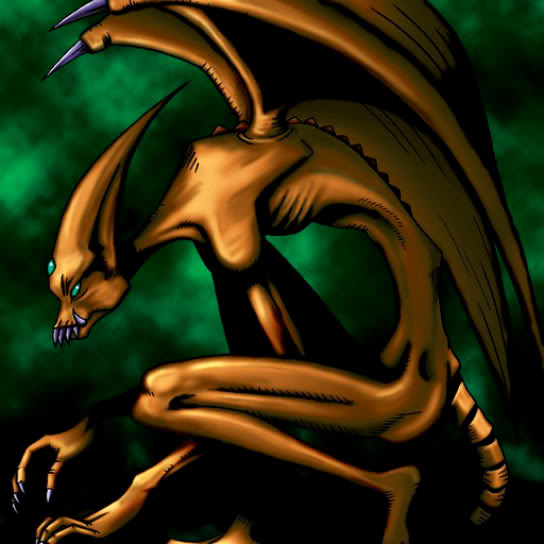

Midnight Fiend

Description: "While this card is face-up in the defense position, all damage to LP is increased by 100 points."
STATS
ATK: 800
DEF: 600DECK COST
Deck Cost per Card: 19EFFECT NOT IMPLEMENTED
Fusion List (5 Possible Fusions)
- Midnight Fiend + Dark Plant = Rose Spectre of Dunn
- Midnight Fiend + Fungi of the Musk = Darkworld Thorns
- Midnight Fiend + One-Eyed Shield Dragon = Koumori Dragon
- Midnight Fiend + Psychic Kappa = Kappa Avenger
- Midnight Fiend + Tentacle Plant = Rose Spectre of Dunn